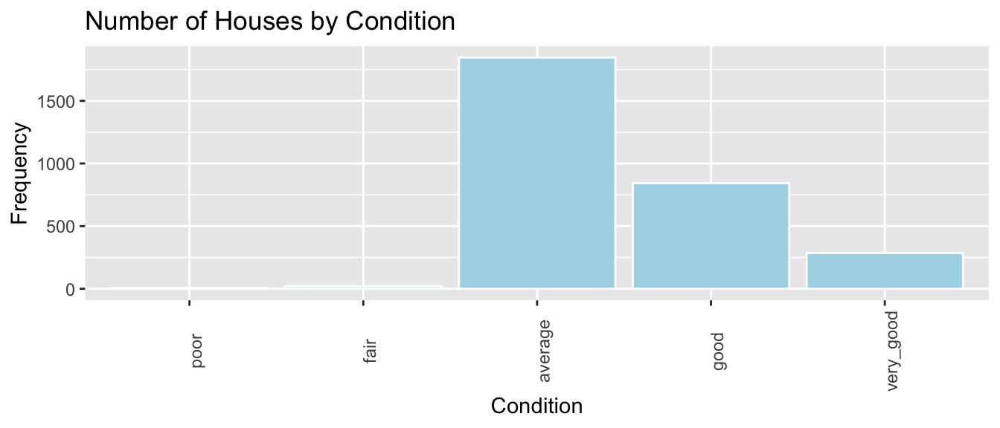
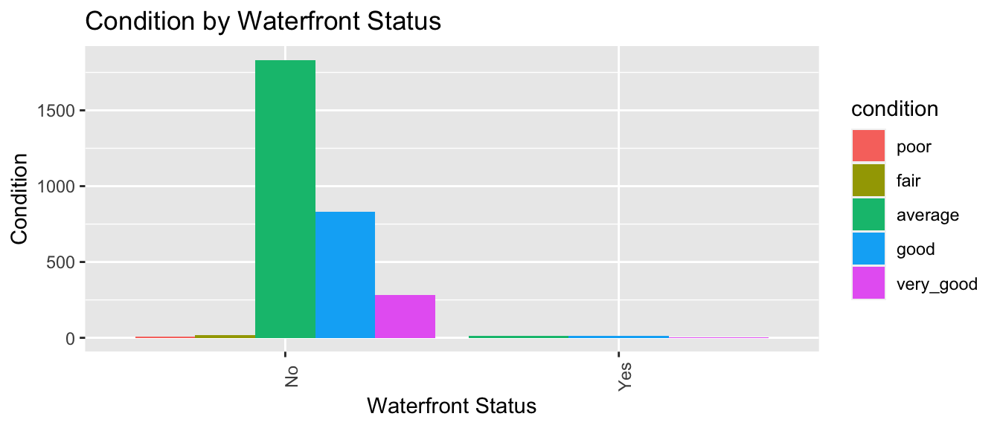
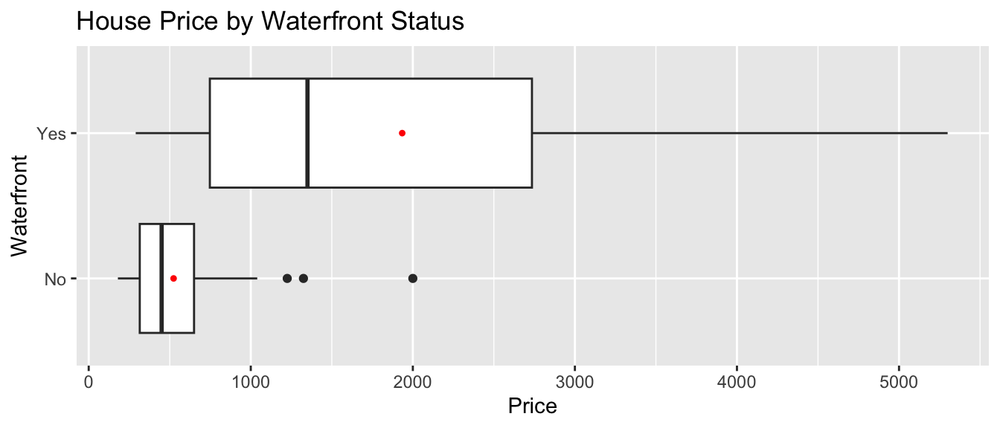

Chapter 1 Exploratory Data Analysis
1.1 Exploring Diamond Prices
1.1.1 The Data
We consider a dataset with prices (in $ US) and other information on 53,940 round cut diamonds. The first 6 rows are shown below.
## # A tibble: 6 10
## carat cut color clarity depth table price x y z
## <dbl> <ord> <ord> <ord> <dbl> <dbl> <int> <dbl> <dbl> <dbl>
## 1 0.23 Ideal E SI2 61.5 55 326 3.95 3.98 2.43
## 2 0.21 Premium E SI1 59.8 61 326 3.89 3.84 2.31
## 3 0.23 Good E VS1 56.9 65 327 4.05 4.07 2.31
## 4 0.29 Premium I VS2 62.4 58 334 4.2 4.23 2.63
## 5 0.31 Good J SI2 63.3 58 335 4.34 4.35 2.75
## 6 0.24 Very Good J VVS2 62.8 57 336 3.94 3.96 2.481.1.2 Observations and Variables
We call the rows of the dataset observations and the columns variables. In this dataset, the observations are the diamonds, and the variables are their attributes.
The dataset incudes both:
- categorical (or factor) variables: cut, color, clarity, and
- quantitative (or numeric) variables, depth, table, price, x, y, z
1.1.3 Exploring the Data
When encountering a new dataset, a good way to start is to create some graphs and tables that help us understand the nature of the data.
For now, well focus on factors related to the price of diamonds.
1.1.4 Boxplot of Diamond Prices
ggplot(data=diamonds, aes(x=price, y=cut, fill=cut)) +
geom_boxplot(outlier.size=0.01, outlier.alpha = 0.1) +
stat_summary(fun=mean, geom="point", shape=4, color="red", size=3)
1.1.5 Histogram of carat size and quality of cut
Next, we examine a histogram, displaying price, cut, and carat size.

1.1.6 Average carat size and price by quality of cut
## # A tibble: 5 4
## cut N Avg_carat Avg_price
## <ord> <int> <dbl> <dbl>
## 1 Fair 1610 1.05 4359.
## 2 Good 4906 0.849 3929.
## 3 Very Good 12082 0.806 3982.
## 4 Premium 13791 0.892 4584.
## 5 Ideal 21551 0.703 3458.1.1.7 Scatterplot of carat size and quality of cut
Next, we use a scatterplot to visualize cut, price, and carat size.

1.1.8 Thought Questions
Consider only the first boxplot. What do we notice about the relationship between price and cut? Is this surprising?
Consider also the histogram and table. How does this information help explain the surprising result noted in Question 1?
Now consider all of the plots and the table. What should we conclude about the relationship between price and quality of cut? Are better cuts generally more expensive? less expensive? about the same? Does the relationship between price and cut seem to depend on carat size?
1.1.9 Terminology
The diamonds dataset is an example of two statistical concepts:
Simpsons Paradox refers to a situation when an apparent relationship between two variables changes or reverses when additional variable(s) are considered.
Example: diamonds with higher quality of cut appear less expensive than lower quality cuts, until we account for carat size
An interaction between two variables X and Y occurs when the relationship between X and a third variable Z depends on Y.
Example: the relationship between cut and price depends on carat size, so there is an interaction between cut and carat size.
1.2 Exploratory Analysis in R
This section provides examples of how to read data into R, create graphics, and calculate summary statistics.
Well work with data on movies released in Hollywood between 2012 and 2018.
1.2.1 Loading the Data
Well begin by loading the tidyverse package, which can be used to create professional graphics, and wrangle (or manipulate) data into forms that are informative and easy to work with.
Next, we read in the data itself, from the website where it is stored.
1.2.2 Previewing the Data
head()
The head() function displays the first 5 rows of the dataset.
## # A tibble: 6 15
## Movie LeadStudio RottenTomatoes AudienceScore Genre TheatersOpenWeek
## <chr> <chr> <dbl> <dbl> <chr> <dbl>
## 1 2016: Obama's Rocky Mou 26 73 Docu 1
## 2 21 Jump Street Sony Pict 85 82 Come 3121
## 3 A Late Quartet Entertain 76 71 Drama 9
## 4 A Royal Affair Magnolia 90 82 Drama 7
## 5 Abraham Lincol Twentieth 35 51 Horr 3108
## 6 Act of Valor Relativit 27 72 Acti 3039
## # with 9 more variables: OpeningWeekend <dbl>, BOAvgOpenWeekend <dbl>,
## # Budget <dbl>, DomesticGross <dbl>, WorldGross <dbl>, ForeignGross <dbl>,
## # Profitability <dbl>, OpenProfit <dbl>, Year <dbl>glimpse
The glimpse() command shows the number of observations (rows), and the number of variables, (columns). We also see the name of each variable and its type. Variable types include
Categorical variables, which take on groups or categories, rather than numeric values. In R, these might be coded as logical
<logi>, character<chr>, factor<fct>and ordered factor<ord>.Quantitative variables, which take on meaningful numeric values. These include numeric
<num>, integer<int>, and double<dbl>.
## Rows: 1,295
## Columns: 15
## $ Movie <chr> "2016: Obama's America", "21 Jump Street", "A Late Qu
## $ LeadStudio <chr> "Rocky Mountain Pictures", "Sony Pictures Releasing",
## $ RottenTomatoes <dbl> 26, 85, 76, 90, 35, 27, 91, 56, 11, 44, 93, 63, 87, 9
## $ AudienceScore <dbl> 73, 82, 71, 82, 51, 72, 62, 47, 47, 63, 82, 51, 63, 9
## $ Genre <chr> "Documentary", "Comedy", "Drama", "Drama", "Horror",
## $ TheatersOpenWeek <dbl> 1, 3121, 9, 7, 3108, 3039, 132, 245, 2539, 3192, 3, 1
## $ OpeningWeekend <dbl> 0.03, 36.30, 0.08, 0.04, 16.31, 24.48, 1.14, 0.70, 11
## $ BOAvgOpenWeekend <dbl> 30000, 11631, 8889, 5714, 5248, 8055, 8636, 2857, 449
## $ Budget <dbl> 3.0, 42.0, NA, NA, 68.0, 12.0, NA, 7.5, 35.0, 50.0, 1
## $ DomesticGross <dbl> 33.35, 138.45, 1.56, 1.55, 37.52, 70.01, 1.99, 3.01,
## $ WorldGross <dbl> 33.35, 202.81, 6.30, 7.60, 137.49, 82.50, 3.59, 8.54,
## $ ForeignGross <dbl> 0.00, 64.36, 4.74, 6.05, 99.97, 12.49, 1.60, 5.53, 9.
## $ Profitability <dbl> 1334.00, 482.88, NA, NA, 202.19, 687.50, NA, 113.87,
## $ OpenProfit <dbl> 1.20, 86.43, NA, NA, 23.99, 204.00, NA, 9.33, 32.57,
## $ Year <dbl> 2012, 2012, 2012, 2012, 2012, 2012, 2012, 2012, 2012,There are 1,295 movies in the dataset, and 15 variables for each film.
summary
summary displays the mean, minimum, first quartile, median, third quartile, and maximum for each numeric variable.
## Movie LeadStudio RottenTomatoes AudienceScore
## Length:1295 Length:1295 Min. : 0.00 Min. :10.00
## Class :character Class :character 1st Qu.:33.00 1st Qu.:49.00
## Mode :character Mode :character Median :61.00 Median :64.00
## Mean :57.58 Mean :62.18
## 3rd Qu.:84.00 3rd Qu.:77.00
## Max. :99.00 Max. :99.00
## NA's :6
## Genre TheatersOpenWeek OpeningWeekend BOAvgOpenWeekend
## Length:1295 Min. : 1.0 Min. : 0.020 Min. : 204
## Class :character 1st Qu.: 152.5 1st Qu.: 0.845 1st Qu.: 3482
## Mode :character Median :2459.0 Median : 7.600 Median : 6586
## Mean :2008.0 Mean : 17.541 Mean : 13400
## 3rd Qu.:3213.5 3rd Qu.: 20.810 3rd Qu.: 14534
## Max. :4529.0 Max. :257.700 Max. :240000
##
## Budget DomesticGross WorldGross ForeignGross
## Min. : 0.90 Min. : 1.02 Min. : 0.74 Min. : -0.76
## 1st Qu.: 12.00 1st Qu.: 6.40 1st Qu.: 13.09 1st Qu.: 3.91
## Median : 30.00 Median : 26.46 Median : 50.37 Median : 21.58
## Mean : 51.38 Mean : 58.16 Mean : 147.01 Mean : 88.84
## 3rd Qu.: 65.00 3rd Qu.: 66.44 3rd Qu.: 160.38 3rd Qu.: 89.75
## Max. :365.00 Max. :936.66 Max. :2068.22 Max. :1369.54
## NA's :239
## Profitability OpenProfit Year
## Min. : 2.3 Min. : 0.05 Min. :2012
## 1st Qu.: 139.1 1st Qu.: 12.87 1st Qu.:2013
## Median : 268.9 Median : 31.77 Median :2015
## Mean : 435.7 Mean : 64.50 Mean :2015
## 3rd Qu.: 483.0 3rd Qu.: 62.59 3rd Qu.:2017
## Max. :10176.0 Max. :3373.00 Max. :2018
## NA's :239 NA's :239Notice that 239 films have missing information on some of the variables, recorded as NAs.
1.2.3 Adding a New Variable
We can use the mutate() function to create a new variable based on variables already in the dataset.
In the data description, the variable Profitability is defined as WorldGross as a percentage of Budget. Thus, films for which Profitability exceeds 100 were profitable.
We create a variable to tell whether or not a film was profitable. Note that in R, a variable defined as a condition, such as Profitability>100 will return values of either TRUE or FALSE.
## Mode FALSE TRUE NA's
## logical 170 886 2391.2.4 Selecting Columns
If the dataset contains a large number of variables, narrow down to the ones you are interested in working with. This can be done with the select() command. If there are not very many variables to begin with, or you are interested in all of them, then you may skip this step.
Lets narrow the dataset down to the variables Movie, RottenTomatoes, AudienceScore, Genre, WorldGross, Budget, Profitable, and Year.
1.2.5 Filtering by Row
The filter() command narrows a dataset down to rows that meet specified conditions.
Filtering by a Categorical Variable
Lets filter the data to only include action movies, comedies, dramas, and horror movies.
Well also keep only those films whose budget was listed, excluding the 239 NAs. The command !is.na() returns only values that are not NAs.
MoviesSubset1 <- MoviesSubset %>%
filter(Genre %in% c("Action", "Comedy", "Drama", "Horror")) %>% filter(!is.na(Budget))In R, the ! operator means not.
## Rows: 679
## Columns: 8
## $ Movie <chr> "21 Jump Street", "Abraham Lincoln: Vampire Hunter", "A
## $ RottenTomatoes <dbl> 85, 35, 27, 56, 44, 93, 63, 86, 34, 86, 74, 41, 71, 32,
## $ AudienceScore <dbl> 82, 51, 72, 47, 63, 82, 51, 86, 55, 76, 64, 35, 62, 70,
## $ Genre <chr> "Comedy", "Horror", "Action", "Drama", "Comedy", "Drama
## $ WorldGross <dbl> 202.81, 137.49, 82.50, 8.54, 236.80, 36.79, 71.00, 36.7
## $ Budget <dbl> 42.0, 68.0, 12.0, 7.5, 50.0, 10.0, 49.0, 4.6, 220.0, 1.
## $ Profitable <lgl> TRUE, TRUE, TRUE, TRUE, TRUE, TRUE, TRUE, TRUE, TRUE, T
## $ Year <dbl> 2012, 2012, 2012, 2012, 2012, 2012, 2012, 2012, 2012, 2Filtering by a Quantitative Variable
Lets filter the data to only include films whose world gross exceeds 100 million dollars.
Now, lets preview the data again.
## Rows: 444
## Columns: 8
## $ Movie <chr> "21 Jump Street", "Abraham Lincoln: Vampire Hunter", "A
## $ RottenTomatoes <dbl> 85, 35, 44, 96, 34, 78, 85, 66, 38, 88, 78, 17, 74, 45,
## $ AudienceScore <dbl> 82, 51, 63, 90, 55, 76, 71, 67, 46, 92, 75, 32, 56, 72,
## $ Genre <chr> "Comedy", "Horror", "Comedy", "Thriller", "Action", "Ad
## $ WorldGross <dbl> 202.81, 137.49, 236.80, 227.14, 313.48, 554.61, 123.68,
## $ Budget <dbl> 42.0, 68.0, 50.0, 45.0, 220.0, 185.0, 12.0, 102.0, 150.
## $ Profitable <lgl> TRUE, TRUE, TRUE, TRUE, TRUE, TRUE, TRUE, TRUE, TRUE, T
## $ Year <dbl> 2012, 2012, 2012, 2012, 2012, 2012, 2012, 2012, 2012, 2Well use MoviesSubset1 from this point forward.
1.2.6 Histogram
Next, well create graphics to help us visualize the distributions and relationships between variables. Well use the ggplot() function, which is part of the tidyverse package.
Histograms are useful for displaying the distribution of a single quantitative variable
General Template for Histogram
ggplot(data=DatasetName, aes(x=VariableName)) +
geom_histogram(fill="colorchoice", color="colorchoice") +
ggtitle("Plot Title") +
xlab("x-axis label") +
ylab("y-axis label")Histogram of Audience Scores
1.2.7 Density Plots
Density plots show the distribution for a quantitative variable like audience score. Scores can be compared across categories, like genre.
General Template for Density Plot
ggplot(data=DatasetName, aes(x=QuantitativeVariable,
color=CategoricalVariable, fill=CategoricalVariable)) +
geom_density(alpha=0.2) +
ggtitle("Plot Title") +
xlab("Axis Label") +
ylab("Frequency") alpha, ranging from 0 to 1 dictates transparency.
Density Plot of Audience Scores
ggplot(data=MoviesSubset1, aes(x=AudienceScore, color=Genre, fill=Genre)) +
geom_density(alpha=0.2) +
ggtitle("Distribution of Audience Scores") +
xlab("Audience Score") +
ylab("Frequency") 
1.2.8 Boxplot
Boxplots can be used to compare a quantitative variable with a categorical variable
General Template for Boxplot
ggplot(data=DatasetName, aes(x=CategoricalVariable,
y=QuantitativeVariable)) +
geom_boxplot() +
ggtitle("Plot Title") +
xlab("Variable Name") + ylab("Variable Name") You can make the plot horizontal by adding + coordflip(). You can turn the axis text vertical by adding theme(axis.text.x = element_text(angle = 90)).
Boxplot Comparing Scores for Genres
1.2.9 Violin Plot
Violin plots are an alternative to boxplots. The width of the violin tells us the density of observations in a given range.
General Template for Violin Plot
ggplot(data=DatasetName, aes(x=CategoricalVariable, y=QuantitativeVariable,
fill=CategoricalVariable)) +
geom_violin() +
ggtitle("Plot Title") +
xlab("Variable Name") + ylab("Variable Name") Violin Plot Comparing Scores for Genres
ggplot(data=MoviesSubset1, aes(x=Genre, y=AudienceScore, fill=Genre)) +
geom_violin() +
ggtitle("Audience Score by Genre") +
xlab("Genre") + ylab("Audience Score") +
theme(axis.text.x = element_text(angle = 90))
We can view the boxplot and violin plot together.
1.2.10 Scatterplots
Scatterplots are used to visualize the relationship between two quantitative variables.
Scatterplot Template
ggplot(data=DatasetName, aes(x=CategoricalVariable, y=QuantitativeVariable)) +
geom_point() +
ggtitle("Plot Title") +
ylab("Axis Label") +
xlab("Axis Label")Scatterplot Comparing Audience Score and Rotten Tomatoes Score
ggplot(data=MoviesSubset1, aes(x=RottenTomatoes, y=AudienceScore)) +
geom_point() +
ggtitle("Audience and Critics Ratings") +
ylab("Audience Rating") +
xlab("Critics' Rating")We see that there is an upward trend, indicating a positive association between critics scores (RottenTomatoes), and audience scores. However, there is a lot of variability, and the relationship is moderately strong at best.
We can also add color, size, and shape to the scatterplot to display information about other variables.
ggplot(data=MoviesSubset1,
aes(x=RottenTomatoes, y=AudienceScore, color=Genre, size=WorldGross)) +
geom_point() +
ggtitle("Audience and Critics Ratings") +
ylab("Audience Rating") +
xlab("Critics' Rating")
We can add labels for points meeting certain conditions, using geom_text(). This should be done carefully, to avoid overlap.
ggplot(data=MoviesSubset1,
aes(x=RottenTomatoes, y=AudienceScore, color=Genre, size=WorldGross)) +
geom_point() +
ggtitle("Audience and Critics Ratings") +
ylab("Audience Rating") + xlab("Critics' Rating") +
geom_text(data = MoviesSubset1 %>% filter(WorldGross >800), aes(label = Movie),
color="black", check_overlap = TRUE)
1.2.11 Bar Graphs
Bar graphs can be used to visualize one or more categorical variables
Bar Graph Template
ggplot(data=DatasetName, aes(x=CategoricalVariable)) +
geom_bar(fill="colorchoice",color="colorchoice") +
ggtitle("Plot Title") +
xlab("Variable Name") +
ylab("Frequency") Bar Graph by Genre
ggplot(data=MoviesSubset1, aes(x=Genre)) +
geom_bar(fill="lightblue",color="white") +
ggtitle("Number of Films by Genre") +
xlab("Genre") +
ylab("Number of Films") +
theme(axis.text.x = element_text(angle = 90))
1.2.12 Stacked and Side-by-Side Bar Graphs
Stacked Bar Graph Template
ggplot(data = DatasetName, mapping = aes(x = CategoricalVariable1,
fill = CategoricalVariable2)) +
stat_count(position="fill") +
theme_bw() + ggtitle("Plot Title") +
xlab("Variable 1") +
ylab("Proportion of Variable 2") +
theme(axis.text.x = element_text(angle = 90)) Stacked Bar Graph Example
The stat_count(position="fill") command creates a stacked bar graph, comparing two categorical variables. Lets explore whether certain genres are more profitable than others, using the profitability variable.
ggplot(data = MoviesSubset1, mapping = aes(x = Genre, fill = Profitable)) +
stat_count(position="fill") +
theme_bw() + ggtitle("Profitability by Genre") +
xlab("Genre") +
ylab("Proportion Profitable") +
theme(axis.text.x = element_text(angle = 90)) 
Side-by-side Bar Graph Template
We can create a side-by-side bar graph, using position=dodge.
ggplot(data = DatasetName, mapping = aes(x = CategoricalVariable1,
fill = CategoricalVariable2)) +
geom_bar(position = "dodge") +
ggtitle("Plot Title") +
xlab("Genre") +
ylab("Frequency") Side-by-side Bar Graph Example
ggplot(data = MoviesSubset1, mapping = aes(x = Genre, fill = Profitable)) +
geom_bar(position = "dodge") +
ggtitle("Number of Films by Genre") +
xlab("Genre") +
ylab("Number of Films") +
theme(axis.text.x = element_text(angle = 90)) 
1.2.13 Correlation Plot
Correlation plots can be used to visualize relationships between quantitative variables. These can be helpful when we proceed to modeling. Explanatory variables that are highly correlated with the response are often strong predictors that should be included in a model. However, including two explanatory variables that are highly correlated with one another can create interpretation problems.
The cor() function calculates correlations between quantitative variables. Well use select_if to select only numeric variables. The `use=complete.obs command tells R to ignore observations with missing data.
## RottenTomatoes AudienceScore TheatersOpenWeek OpeningWeekend
## RottenTomatoes 1.00 0.71 -0.27 0.14
## AudienceScore 0.71 1.00 -0.21 0.20
## TheatersOpenWeek -0.27 -0.21 1.00 0.59
## OpeningWeekend 0.14 0.20 0.59 1.00
## BOAvgOpenWeekend 0.40 0.35 -0.37 0.13
## Budget 0.06 0.13 0.59 0.72
## DomesticGross 0.24 0.31 0.51 0.93
## WorldGross 0.20 0.28 0.52 0.90
## ForeignGross 0.17 0.25 0.49 0.84
## Profitability 0.08 0.08 0.04 0.15
## OpenProfit -0.10 -0.11 0.13 0.12
## Year 0.04 -0.05 0.08 0.04
## BOAvgOpenWeekend Budget DomesticGross WorldGross ForeignGross
## RottenTomatoes 0.40 0.06 0.24 0.20 0.17
## AudienceScore 0.35 0.13 0.31 0.28 0.25
## TheatersOpenWeek -0.37 0.59 0.51 0.52 0.49
## OpeningWeekend 0.13 0.72 0.93 0.90 0.84
## BOAvgOpenWeekend 1.00 0.08 0.27 0.25 0.22
## Budget 0.08 1.00 0.70 0.78 0.79
## DomesticGross 0.27 0.70 1.00 0.94 0.86
## WorldGross 0.25 0.78 0.94 1.00 0.98
## ForeignGross 0.22 0.79 0.86 0.98 1.00
## Profitability 0.14 -0.12 0.17 0.15 0.13
## OpenProfit -0.07 -0.14 0.07 0.02 -0.01
## Year -0.04 0.01 0.03 0.04 0.04
## Profitability OpenProfit Year
## RottenTomatoes 0.08 -0.10 0.04
## AudienceScore 0.08 -0.11 -0.05
## TheatersOpenWeek 0.04 0.13 0.08
## OpeningWeekend 0.15 0.12 0.04
## BOAvgOpenWeekend 0.14 -0.07 -0.04
## Budget -0.12 -0.14 0.01
## DomesticGross 0.17 0.07 0.03
## WorldGross 0.15 0.02 0.04
## ForeignGross 0.13 -0.01 0.04
## Profitability 1.00 0.84 -0.01
## OpenProfit 0.84 1.00 -0.03
## Year -0.01 -0.03 1.00The corrplot() function in the corrplot() package provides a visualization of the correlations. Larger, thicker circles indicate stronger correlations.
library(corrplot)
Corr <- cor(select_if(HollywoodMovies, is.numeric), use="complete.obs")
corrplot(Corr)
We can also display a numeric version of the correlations by setting method="number".
Corr <- cor(select_if(HollywoodMovies, is.numeric), use="complete.obs")
corrplot(Corr, method="number")
1.2.14 Scatterplot Matrix
A scatterplot matrix is a grid of plots. It can be created using the ggpairs() function in the GGally package.
The scatterplot matrix shows us:
- Along the diagonal are density plots for quantitative variables, or bar graphs for categorical variables, showing the distribution of each variable.
- Under the diagonal are plots showing the relationships between the variables in the corresponding row and column. Scatterplots are used when both variables are quantitative, bar graphs are used when both variables are categorical, and boxplots are used when one variable is categorical, and the other is quantitative.
- Above the diagonal are correlations between quantitative variables.
We need to remove the column with the movie names. This is done using select.

The scatterplot matrix is useful for helping us notice key trends in our data. However, the plot can hard to read as it is quite dense, especially when there are a large number of variables. These can help us look for trends from a distance, but we should then focus in on more specific plots.
1.2.15 Summary Tables
group_by() and summarize()
The group_by() and summarize() commands are useful for breaking categorical variables down by category. For example, lets calculate number of films in each genre, and the mean, median, and standard deviation in film WorldGross by genre.
MoviesSubset1 %>% group_by(Genre) %>%
summarize(N = n(),
Mean_Gross = mean(WorldGross, na.rm=TRUE),
Median_Gross = median(WorldGross, na.rm=TRUE),
StDev_Gross = sd(WorldGross, na.rm = TRUE)) %>%
arrange(desc(Mean_Gross))## # A tibble: 4 5
## Genre N Mean_Gross Median_Gross StDev_Gross
## <chr> <int> <dbl> <dbl> <dbl>
## 1 Action 162 371. 222. 393.
## 2 Horror 78 103. 79.6 113.
## 3 Comedy 160 85.1 65.0 77.0
## 4 Drama 279 76.4 34.7 119.Notes:
1. The n() command calculates the number of observations in a category.
2. The na.rm=TRUE command removes missing values, so that summary statistics can be calculated.
3. arrange(desc(Mean_Gross)) arranges the table in descending order of Mean_Gross. To arrange in ascending order, use arrange(Mean_Gross).
The kable() function in the knitr() package creates tables with professional appearance.
library(knitr)
MoviesTable <- MoviesSubset1 %>% group_by(Genre) %>%
summarize(N = n(),
Mean_Gross = mean(WorldGross, na.rm=TRUE),
Median_Gross = median(WorldGross, na.rm=TRUE),
StDev_Gross = sd(WorldGross, na.rm = TRUE)) %>%
arrange(desc(Mean_Gross))
kable(MoviesTable)| Genre | N | Mean_Gross | Median_Gross | StDev_Gross |
|---|---|---|---|---|
| Action | 162 | 370.85648 | 221.59 | 393.01213 |
| Horror | 78 | 102.55423 | 79.63 | 113.14402 |
| Comedy | 160 | 85.14469 | 64.99 | 77.00407 |
| Drama | 279 | 76.42573 | 34.72 | 119.08083 |